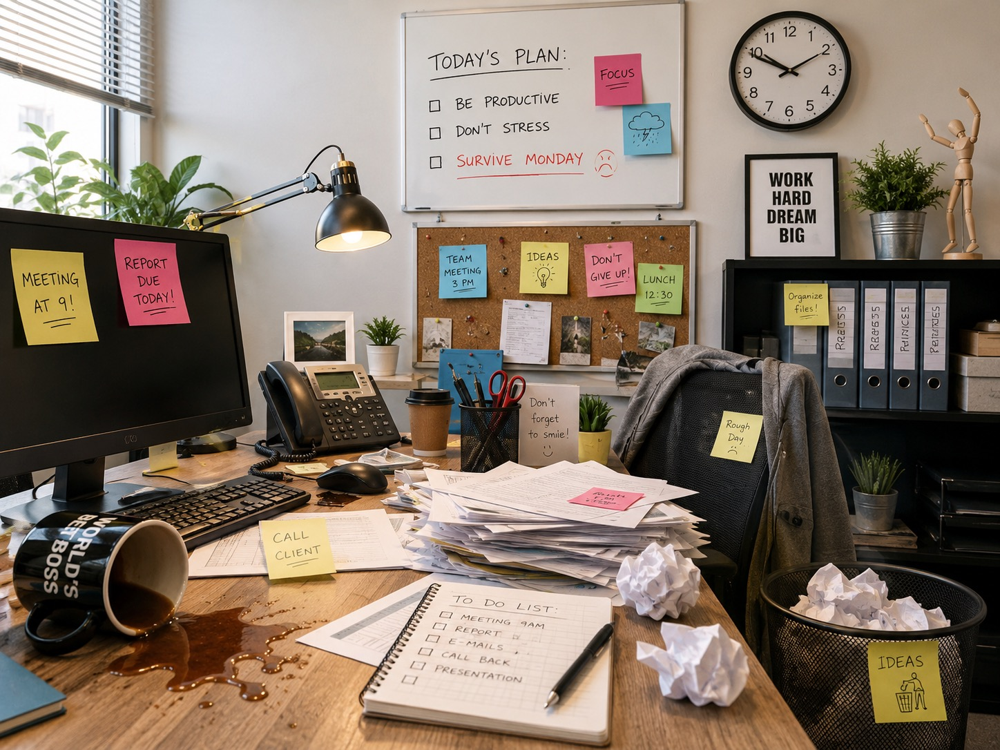

Image-tracked WebAR
Point your camera at the office poster. Paper balls already visible in the photograph will subtly come alive in place.
http://localhost:4173/web-ar/
Camera processing stays in your browser. HTTPS is required on a phone.

Display or print this image, then scan it from the AR page.